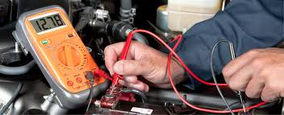

Le voyant moteur clignote comme une discothèque depuis trois semaines ? On branche nos outils, on décode le mystère et on vous dit ce qui cloche vraiment.

On teste la Batterie pour s'assurer qu'elle est en pleine forme. Si elle est faible, on vous le dit avant que votre voiture ne décide de faire une sieste au milieu de la route.
Toutes nos voitures passent par des contrôles techniques stricts. Des garanties allant jusqu'à 24 mois peuvent être ajoutées selon vos besoins.